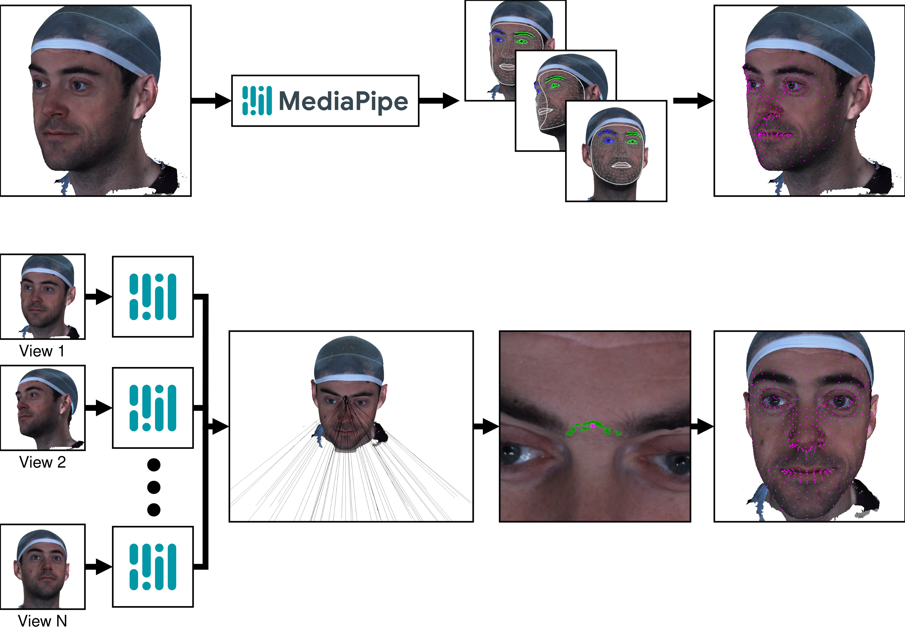

Informazioni
- Autore: Samuele Bertinelli
- Corso: Geometria Computazionale
- Anno Accademico: 2025/2026
Panoramica
FaceMarks è una libreria Python per il rilevamento automatico di landmarks facciali su mesh tridimensionali. Sfrutta tecniche di geometria computazionale e consenso multi-vista per proiettare punti facciali 2D su superfici 3D, fornendo un posizionamento accurato e coerente.
L'ambito di questo progetto si concentra su un problema specifico della pipeline: implementare e confrontare diverse strategie per aggregare le intersezioni raggio-mesh ottenute da più viste in posizioni 3D affidabili.
Pipeline
- Caricamento mesh - La mesh 3D viene normalizzata (scala, centroide) e convertita in formato tensore per raycasting accelerato su GPU
- Generazione viste - N (parametro impostabile) angoli di vista randomici vengono generati attorno all'orientamento frontale
- Rendering offscreen - Per ogni vista, la mesh viene poriettata in 2D su un piano immagine
- Rilevamento 2D - MediaPipe Face Landmarker identifica 478 punti facciali in ogni immagine renderizzata
- Hidden Point Removal - I punti occlusi vengono filtrati usando test di visibilità basati su raycasting
- Calcolo raggi - Le direzioni 2D vengono trasformate in raggi 3D usando le matrici intrinseche ed estrinseche della camera
- Aggregazione (ambito del progetto) - I molteplici raggi generati per ogni landmark vengono aggregati in una posizione 3D usando una delle strategie esplorate
- Associazione vertici - La posizione 3D viene mappata al vertice più vicino della mesh

Per Saperne di Più
- Teoria - Metodi di geometria computazionale usati nel progetto